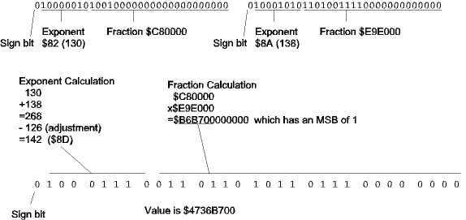

| Previous Section | Next Section | Index | Questions | Search the Text |
Floating point multiplication is a straightforward process, basically involving multiplying the fractions while adding the exponents. Multiplication of two 24 bit values produces a 48 bit product, of which we only need the most significant 24 bits. The binary point of the product is 46 bits (23+23) from the right, which makes it 2 bits from the left. The product is thus effectively right shifted one bit, since we expect the binary point one bit from the left, so the calculated exponent will be one too low. Adding the exponents also means we are adding in an extra exponent bias, so we must compensate for that as well. This means we need to subtract the bias of 127 and add 1 for the shift, or simply subtract 126 from the result exponent.
As an example, let's multiply 12.5 by 3742, giving the product 46775. The IEEE floating point representation of 12.5 is $41480000 and that of 3742 is $4569E000. Splitting into fields and performing the calculations:

Using the floating point to integer conversion technique of the previous section, we verify the product to be 46775.
Let's walk through the code, which doesn't start at the beginning, but at the end.
fpMul2AdjRet:
movw 2,SP 6,SP ; move second to first
movw 4,SP 8,SP
fpMulAdjRet:
movw 0,SP 4,SP ; shift return address over
leas 4,SP ; adjust stack pointer
rts
The code at fpMulAdjRet allows returning from the function, deleting the second value on the stack but leaving the first. The code at fpMul2AdjRet will return the second value on the stack by moving it to the location of the first value, then finishing with the fpMulAdjRet code. Now we are at the entry point to the multiply function. The first thing it does is check the first value on the stack, returning it as the product if it is either zero or NAN. I'm fudging with the code for NAN since +Infinity times -Infinity doesn't give infinity, but then I didn't promise full NAN support.
fpMultiply: ; Multiply two floating point values
leax 6,SP ; First value on stack
jsr fpSetCC
beq fpMulAdjRet ; return first value (zero)
bvs fpMulAdjRet ; return first value (NAN)
Then we do the same analysis of the second value on the stack.
leax 2,SP ; Second value on stack
jsr fpSetCC
beq fpMul2AdjRet ; return second
bvs fpMul2AdjRet ; return second
We adjust the stack pointer to reserve space for two unpacked floating point values. FPSIZE is the size of an unpacked value. By using constants, we can allow for possible future changes in the unpacked representation. After adjusting the stack pointer, our two function arguments start at FPSIZE*2+2 from the stack pointer value. Another constant, FPOFF, is defined to be that value, simplifying the appearance of the source code. We unpack both arguments into our reserved space.
leas -FPSIZE*2,SP ; Reserve space for two unpacked fp values
leay FPSIZE,SP ; unpack values
jsr fpExtract
leax FPOFF+4,SP
tfr SP Y
jsr fpExtract
At this point, the values are extracted and we don't need the original arguments any more. Therefore we will use that RAM space for temporary variables. In particular, we will use the 6 bytes from FPOFF through FPOFF+5 (plus SP) to hold the 6 byte product of multiplication. We will multiply with the EMUL instruction, dividing the operation into four multiplications adding the partial products as we progress. Note that although we will be doing a 32x32 bit multiply, we know the upper 8 bits of each operand is 0, and we only need to calculate a 48 bit product rather than a 64 bit product. We also need to calculate the full 48 bits rather than just the upper 24 of those 48 because the operands are not necessarily normalized if they are extremely small.
ldd FLOW,SP ; lower product
ldy FLOW+FPSIZE,SP
emul
std FPOFF+4,SP ; save product
sty FPOFF+2,SP
ldd FHIGH,SP ; first cross product
ldy FLOW+FPSIZE,SP
emul
addd FPOFF+2,SP ; partial sum
std FPOFF+2,SP
tfr Y D
adcb #0
adca #0
std FPOFF,SP
ldd FLOW,SP ; second cross product
ldy FHIGH+FPSIZE,SP
emul
addd FPOFF+2,SP ; partial sum
std FPOFF+2,SP
tfr Y D
adcb #0
adca #0
addd FPOFF,SP ; we can't get a carry out here
std FPOFF,SP
ldd FHIGH,SP ; high order product
ldy FHIGH+FPSIZE,SP
emul
addd FPOFF,SP ; partial sum
std FPOFF,SP ; no carry possible
The multiplication is complete, so we need to add exponents. The exponent fields are unsigned bytes, but the calculation must be done using 16 bit integers since the sum may overflow 8 bits. Quite frankly, this isn't coded as well as it could have been. I really didn't need the RAM word at FPOFF+6,SP.
ldab FEXPO,SP ; get exponent of product
clra
std FPOFF+6,SP ; save first exponent
ldab FEXPO+FPSIZE,SP
clra
addd FPOFF+6,SP ; Sum of exponents
subd #126 ; correct offset and product decimal point loc
If the exponent we calculated is zero or less, then our result is too small to normalize, and we have a special case of the small, un-normalized result. Otherwise we need to normalize the result. This involves shifting the product to the left, decrementing the exponent, until the most significant bit of the product is 1. Luckily, if the original arguments were normalized this shift will never need to be performed more than once
fpMulJoin:
ble fpMulTooSmall ; negative or zero means small result
tst FPOFF,SP ; maybe normalize
bmi fpMulNormDone
fpMulNorm:
subd #1 ; adjust exponent
beq fpMulZero ; product too small
asl FPOFF+5,SP ; shift product
rol FPOFF+4,SP
rol FPOFF+3,SP
rol FPOFF+2,SP
rol FPOFF+1,SP
rol FPOFF,SP
bpl fpMulNorm
The three bytes of high product can now be moved into the unpacked result location. Then we check for overflow. The exponent cannot be larger than 254. If it is, we make it 255, which indicates overflow (infinity). We should also clear the fraction, but, again, we aren't fully supporting NANs.
fpMulNormDone:
leax FPOFF,SP ; move fraction into place
leay FHIGH,SP
clr 1,Y+ ; first byte zero
movb 1,X+ 1,Y+ ; second byte
movw 0,X 0,Y ; 3rd and 4th bytes
cpd #254 ; Is value not too high?
ble fpMulNormOK
ldab #255 ; Then indicate NAN
fpMulNormOK:
stab FEXPO,SP
We exclusive-or the signs of the operands to get the sign of the product. With the unpacked product fields complete, we pack the product into the first argument position, adjust the stack to remove the unpacked variable temporary memory, and then jump to fpMulAdjRet to return the first argument.
ldaa FSIGN,SP ; calculate sign
eora FSIGN+FPSIZE,SP
staa FSIGN,SP
tfr SP X
leay FPOFF+4,SP
jsr fpPack ; pack up result
leas FPSIZE*2,SP ; restore stack
jmp fpMulAdjRet
In the case the value is too small to normalize, we must shift it right, incrementing the exponent, until the exponent reaches the minimum allowed value of 1. After doing that, we can pretend that everything is fine and branch back to the normal multiplication result determination code.
fpMulTooSmall:
addd #1 ; adjust exponent
lsr FPOFF,SP ; shift result right
ror 15,SP
ror FPOFF+2,SP
cpd #1
bne fpMulTooSmall
bra fpMulNormDone
Multiplication was easy enough, so how about division? Division is implemented using the same approach, so it will not be covered here. Of course it is in the library source code. The major difficult with division is in dividing the two 24 bit values. The algorithm shown in the source code came out of the Seminumerical Algorithms book by Donald E. Knuth. After the division is complete and the exponents are subtracted, the remainder of the process is the same as multiplication, and in fact the code is shared between the two routines.
Continue with Floating Point Addition.
Return to the Index.